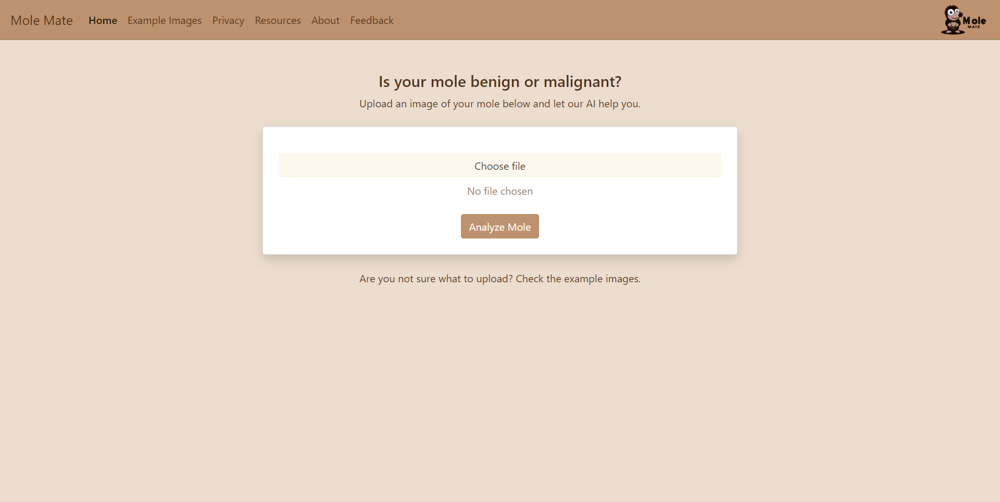

Mole Mate is a site created by Corey Johnsen and Noëlla Hilgen that uses machine learning to allow users to predict whether their moles are malignant or benign with a high degree of accuracy. It was created for a class called AI Lifecycle that focuses on teach the entire cycle of an AI product from a concept all the way to deployment of the product.
The dataset for this project was obtained from Kaggle and consists of a large collection of images of moles along with labels indicating whether they are malignant or benign. We then applied preprocessing steps to the images in the form of resizing, contrast shifting, brightness shifting, and normalization. This data was then used to train and evalute an EfficientNetB3 model which eventually achieved 91% accuracy.
The application was built using the Flask framework in Python. The application supports the frontend site, as well as an endpoint to interface with the trained model to predict the result of an uploaded image. This application was packaged using Docker, and then deployed via AWS using ECR and ECS. Unfortunately, due to costs associated with serving the application, it is not currently deployed. However, the code and some screenshots of the site are still available on the GitHub page.